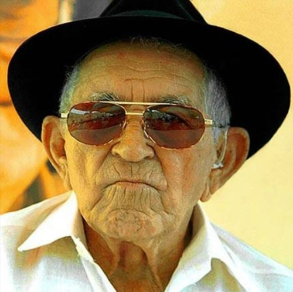

Dia 8 de outubro é comemorado o Dia do Nordestino, a data foi instituída por uma lei de 2009, na
cidade de São Paulo;
confira como surgiu a comemoração
O dia 8 de outubro é comemorado o Dia do Nordestino. A data é uma forma de homenagear quem nasceu no Nordeste e toda a pluralidade e riqueza cultural da região.
A criação do Dia do Nordestino está diretamente ligada ao reconhecimento da importância histórica e cultural do Nordeste. A data foi instituída em 2009, no município de São Paulo, por meio de uma lei municipal, como uma forma de celebrar os nordestinos que migraram para outras regiões do país, especialmente para o Sudeste, em busca de novas oportunidades.
A escolha de 8 de outubro foi uma homenagem ao nascimento de Patativa do Assaré, um dos mais importantes poetas populares e cordelistas nordestinos, conhecido por suas obras que retratam a vida e os desafios do sertão e da região Nordeste.
Poeta Patativa do Assaré
Atualmente, o Dia do Nordestino é celebrado em várias regiões do Brasil, especialmente em cidades com grandes comunidades de migrantes nordestinos. A data se tornou uma oportunidade para celebrar e fortalecer a identidade nordestina, promovendo eventos culturais, shows, exposições e feiras gastronômicas.
O Dia do Nordestino não é apenas uma celebração da cultura, mas também um reconhecimento da luta e das conquistas do povo nordestino ao longo da história.